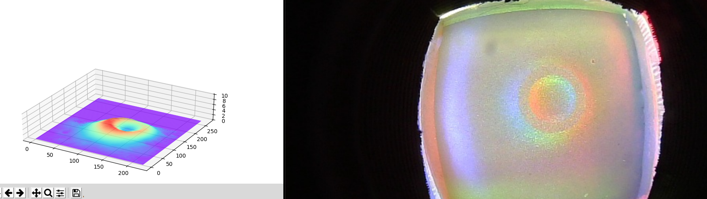
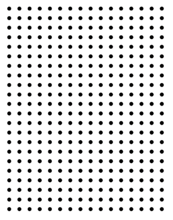
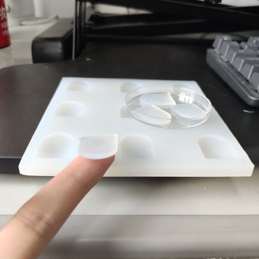
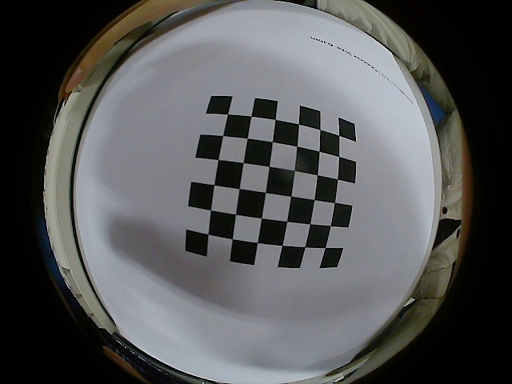

Yongqiang Zhao 赵永强
I am a PhD student in the Department of Engineering at
King's College London.
My research focuses on machine perception for robot interaction, especially visual-tactile perception for dexterous manipulation.
So far, I have developed tactile simulation, sim-to-real transfer, and visual-tactile imitation learning methods for assembly,
deformable-object tracing, and laboratory manipulation. Over the next few years, I aim to connect robot interaction simulation,
tactile system design, and scalable learning algorithms to build general visual-tactile perception models for reliable sim-to-real robot manipulation.
Before joining King's, I received both my Bachelor's and Master's degrees from
Southeast University.
I work with Prof. Shan Luo and focus on dexterous manipulation, tactile simulation, and multimodal learning.
Recent News
- 🎉 [2026] Our paper Visual-Tactile Peg-in-Hole Assembly Learning from Peg-out-of-Hole Disassembly was accepted by IEEE Robotics and Automation Letters.
- 🎉 [2026] Our paper ViTac-Tracing: Visual-Tactile Imitation Learning of Deformable Object Tracing was accepted by ICRA 2026.
- 🎉 [Summer 2025] I served as a leading developer and organizer for the Third London Summer School in Robotics and AI, including a visual-tactile grasping mini-hackathon.
- 🎉 [2024-Present] I have been serving as reviewer for RA-L, ICRA, and IROS in tactile perception, robot learning, and manipulation.
Papers

Visual-Tactile Peg-in-Hole Assembly Learning from Peg-out-of-Hole Disassembly
IEEE Robotics and Automation Letters, accepted, 2026

ViTac-Tracing: Visual-Tactile Imitation Learning of Deformable Object Tracing
IEEE International Conference on Robotics and Automation, accepted, 2026

ViTacGen: Robotic Pushing with Vision-to-Touch Generation
IEEE Robotics and Automation Letters, accepted/in press, 2025

SimTac: A Physics-Based Simulator for Vision-Based Tactile Sensing with Biomorphic Structures
Recent publication record, 2025

Training Tactile Sensors to Learn Force Sensing from Each Other
Nature Communications, published March 2, 2026


Pixel-Level Domain Adaptation for Real-to-Sim Object Pose Estimation
IEEE Transactions on Cognitive and Developmental Systems, 2023

Unsupervised Adversarial Domain Adaptation for Sim-to-Real Transfer of Tactile Manipulation Skills
ICRA 2023 ViTac Workshop

Paper list updated using public records associated with your Google Scholar profile, primarily King's College London Pure entries when Scholar itself could not be fetched directly.
Projects

Tactile Foundation Models for Robot Manipulation
Dec. 2025 - Present

Visual-Tactile Imitation Learning of Deformable Object Manipulation
Mar. 2025 - Sep. 2025
Tactile Simulation and Sim-to-Real Skill Learning
Jan. 2024 - Mar. 2026